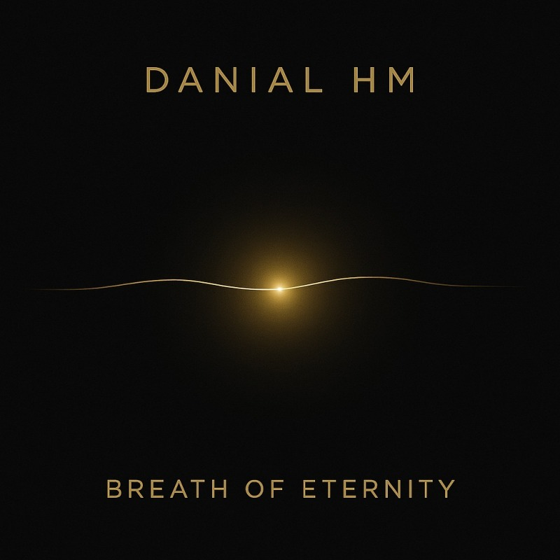

SINGLE · DECEMBER 5, 2025
Breath of Eternity
Every beginning is smaller than the story we later tell about it. This release opened the recorded path: Persian setar, space, restraint and a trust that one clear sound can be enough.
“Every journey begins with a single breath.”
Its language is intimate rather than grand. The point is not to escape time, but to hear one moment closely enough that it briefly feels larger.
ArtistDanial HM
LabelDanial HM Records
Release dateDecember 5, 2025
FormatSingle
UPC199951937449
ISRCQT6F32540701
PRESS